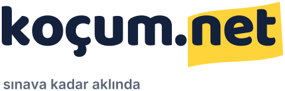
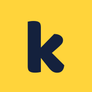
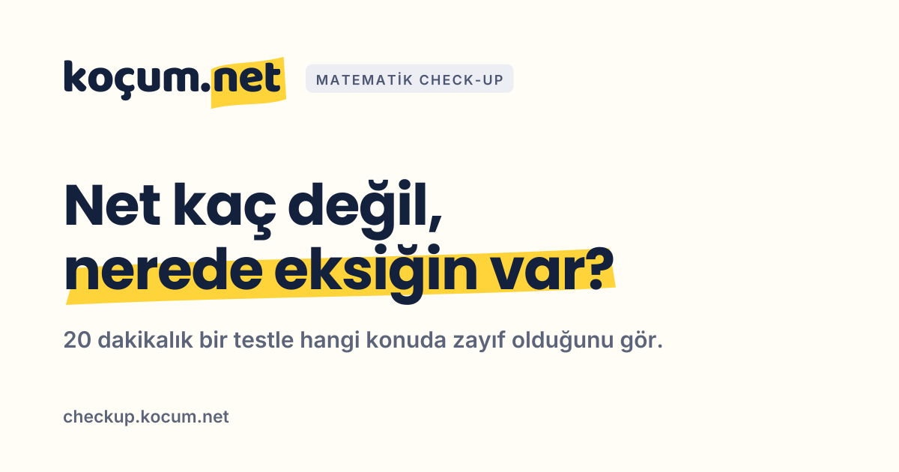
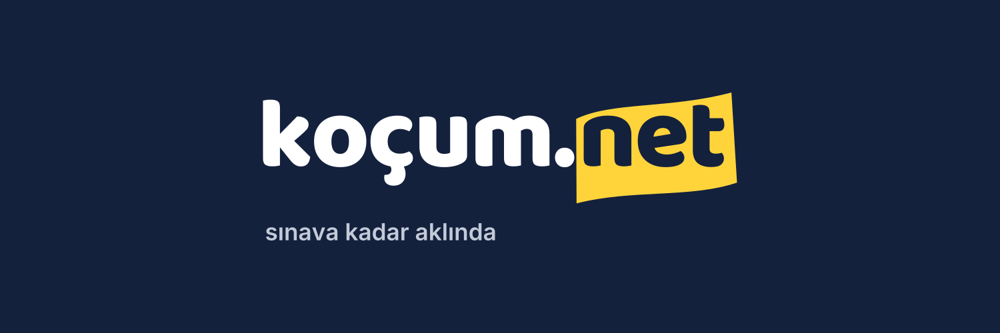

Sınava kadar aklında.
Koçum.Net'in logosu, renkleri ve kullanım kuralları. Logo bir yazı: koçum.net, ve "net" fosforlu kalemle çizilmiş. Sınavda önemli olan tek şey net; ders çalışan biri de önemli olanın üstünü çizer. Bütün dosyalar bu klasörde: svg/, png/, sosyal/.
Logo
Varsayılan, açık zemindeki lacivert sürüm. Zemin koyuysa koyu sürüm: "koçum." beyaza döner, "net" her zaman sarı kalemin üstünde lacivert kalır. Tek renk sürümlerde "net" kalem şeklinden oyulur; baskı, damga, nakış ve lazer için.


Uyarlanır · açık/koyu
Tek dosya: sistem koyu moddaysa "koçum." kendiliğinden beyaza döner. Web, GitHub, Notion. E-postada PNG kullan.





İkon
Logonun sığmadığı kare alanlar için: sarı zeminde lacivert "k". Tarayıcı sekmesi, telefon ana ekranı, sosyal medya profil fotoğrafı. Koyu arayüzlerde lacivert sürüm.

iOS


Renkler
İki renk markayı taşır: lacivert ve fosforlu sarı. Sarı hiçbir zaman metin rengi değildir; beyaz zeminde okunmaz. Yalnızca vurgu: kalem şekli, metin seçimi, bir başlıkta tek kelime. Arayüzde bağlantı ve düğmeler mavi kalır.
#14213D · rgb(20, 33, 61)Logo yazısı, başlıklar, koyu zemin.
#FFD43B · rgb(255, 212, 59)Yalnızca vurgu. Üstünde her zaman lacivert.
#FFFDF6 · rgb(255, 253, 246)Sıcak zemin: afiş, paylaşım görseli.
#FFFFFFVarsayılan zemin.
#1A5FB4 · rgb(26, 95, 180)Bağlantı ve düğme (site, uygulama, panel).
| Eşleşme | Kontrast | Kullanım |
|---|---|---|
| Lacivert yazı · beyaz zemin | 16,0 : 1 | Her yerde (WCAG AAA) |
| Lacivert yazı · sarı zemin | 11,2 : 1 | Vurgulanan kelime (AAA) |
| Sarı yazı · beyaz zemin | 1,4 : 1 | Asla |
Yazı tipleri
Logo · Baloo 2 ExtraBold
koçum.net
Yalnızca logoda. Dosyalarda yazı çizgiye çevrildi; metinde, başlıkta kullanma.
Başlık · Poppins SemiBold / Bold
Bu hafta sadece iki konu.
Gövde ve arayüz · Inter
20 dakikalık bir testle matematikte hangi konuda güçlü, hangisinde zayıf olduğunu gör. Sonunda rapor değil, bu hafta ne çalışacağın çıkar.
Boşluk, boyut, yapılmayacaklar
Logonun her yanında en az "o" harfinin yüksekliği kadar boş alan bırak; başka yazı ya da görsel o alana girmesin. En küçük boyut: ekranda 96 px genişlik, baskıda 25 mm. Daha küçük alanlarda ikon kullan (en küçük 16 px).
x = "o" harfinin yüksekliği (logo genişliğinin yaklaşık onda biri)
Esnetme, sıkıştırma
Oranı her zaman korunur.
Renkleri değiştirme
Kalem sarı, yazı lacivert; başka renk yok.
Açık sürümü koyu zeminde kullanma
"koçum." kaybolur; koyu sürümü kullan.
Sarı zeminde kullanma
Kalem görünmez olur; tek renk lacivert sürümü kullan.
Gölge, kontur, efekt ekleme
Logo düz kalır.
Döndürme, eğme
Kalemin kendi eğimi yeterli.
Sosyal medya
Profil fotoğrafı daire kırpmaya dayanıklı. Site her sayfa için paylaşım görselini kendisi üretiyor (dile göre slogan); buradakiler sitenin dışındaki kullanımlar için.



Check-up paylaşım görseli
checkup.kocum.net bağlantısının önizlemesi. Uygulamaya otomatik bağlı.




Kodda
Üç projede (site, check-up, panel) logo bileşen olarak var ve yol verisini bu kitten alıyor; yazı tipine bağlı değil. E-postalar eposta-logo.png'yi kullanıyor (beyaz zeminli, 2× çözünürlük).
// Site: components/LogoMark.tsx <Wordmark /> // açık zemin <Wordmark tone="light" /> // koyu zemin <LogoMark /> // kare ikon // Check-up ve panel: components/ui/logo.tsx · components/brand/Logo.tsx <Wordmark /> <Wordmark compact /> <Logo />
Kit değişirse:
cd design && npm install && npm run marka # SVG, PNG, ICO, sosyal görseller cd .. && node design/sync.mjs # ikonlar ve yol verisi üç projeye